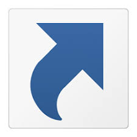

Installation
- Obtain the latest install utility from the StartAllBack website.
-
Install StartAllback using C:\Src\setups\StartAllBack_3.xxx_setup.exe
License key: 49A514F7-C869-9AC9-B2A4-00002736F6D4 - On blank taskbar area: Right-click -> Properties
- Welcome: Theme: Kinda 10
-
Start Menu
- Use enhanced start menu: On
- Visual style: Default
- Icons size: M
- Icon count: 10
- All Programs - Check: Display Modern apps in a folder
- General - Check: Open submenus when I pause on them with the mose pointert
- Search - Check: Search programs and settings, Search public folders
-
Right side items
If the item is not listed below, check "Don't display"- Click: Display glyph icons
- swane: Link
- Recent Items: Menu
- This PC: Link
- Contol Panel: Link
- Settings: Link
- Devices and Printers: Link
- Command Prompt: Link
- Run: Link
- Power button default action: Shut down
-
Taskbar
-
Choose Taskbar Style
- Used enhanced classic taskbar: On
- Visual Style: Default
- Icon size: M
- Icon margins: M
- Start button icon: #3. Window from an angle
-
Tweak behavior and superpowers
- Taskbar location on screen: Bottom
- Combine taskbar buttons: Always, hide labels
- On secondary taskbars: Always hide labels
- Check only - Automatic hiding
-
Choose Taskbar Style
-
Tray Icons
- Choose flyouts style: Windows 11 flyouts
-
Turn system icons on or off
Turn the following on, all others off:- Other system tray icons
- Location
- Microphone
- Bluetooth Devices
- Volume
- Network
- Power
- Touch Keyboard: When no keyboard is attached
- Input Indicator
- Clock
- Action Center
-
Other system tray icons, check:
- SUN.EXE
-
Explorer
-
Choose Explorer style
- Win11 Command Bar
- Check: Mica effect on top, Classic search box, New icons
- Uncheck: Detail pane on bottom
-
Make it top notch
- Check: Classic context menus, Restore Control Panel applets
- Uncheck: Colorize everything with accent color
-
Choose Explorer style
-
Advanced
- Customize appearance - Nothing checked
-
Tweak Windows settings
- Nothing checked
- Number of jumplist items to display: 10
- Disable StartAllBack - Nothing checked
-
About
- Version: 3.8.13
- License key: 49A514F7-C869-9AC9-B2A4-00002736F6D4
Shortcuts
Last updated:
To update the Shortcuts list, open a command prompt:
C>cd\Src\sysdocs\generate
C>py loadShortcuts.py